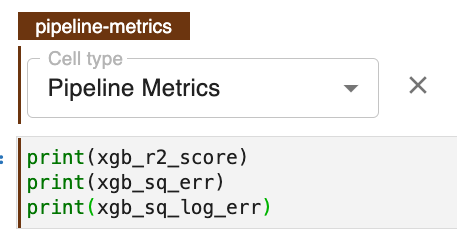

Lab: Hyperparameter Tuning Preparation
Preparing your notebook for hyperparameter tuning involves:
- Moving all relevant tracking metrics to the final cell of a notebook and
tagging this cell with
Pipeline Metrics. - Skipping all unnecessary cells so you only focus on the relevant model.
In the prior walk through you began this exercise and now in this lab you will finish the work you began.
Requirement
This lab has two requirements. First you must finish preparing the
Pipeline Metrics cell. To do this you must:
- Add
print(xgb_sq_err)to the final cell - Add
print(xgb_sq_log_err)to the final cell - Tag the cell with
Pipeline Metrics
Second you must finish skipping unnecessary cells. To do this
tag the Random Forest model cells with Skip.
Solution
View Solution
The final cell in the notebook should look like this: 
The skipped cells should look like this:

Once you have completed this lab please proceed to the next page.